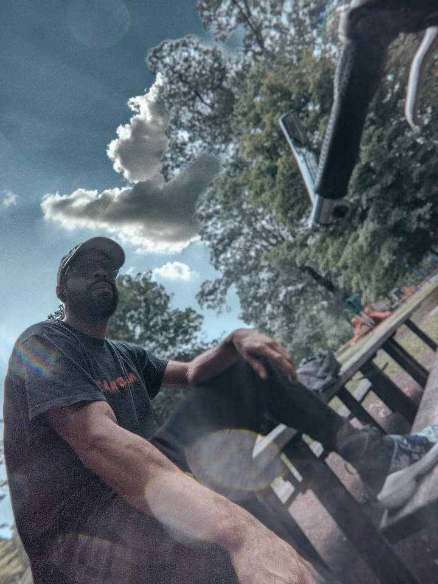

I'm a music artist, living in Millington, Tennessee, making the transition to software development. I hope to one day be a part of the video game industry.
With coding I hope to:
- Open up more doors of oppurtunity.
- Learn a skill that is marketable.
- Utilize the skills I've learned, in my artistry somehow.
Born in Newark, Delware and raised in California, I now call the south home (for a little while anyway.) Most of my spare time goes to my music; music is most definitely my greatest passion. I just love putting things to together and having everything sound pristine. I feel that there's a similarity with coding, in the creation aspect of it. I hope to explore that more through the course!